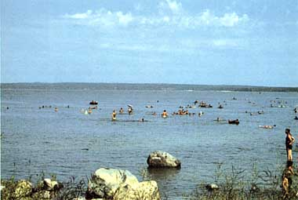
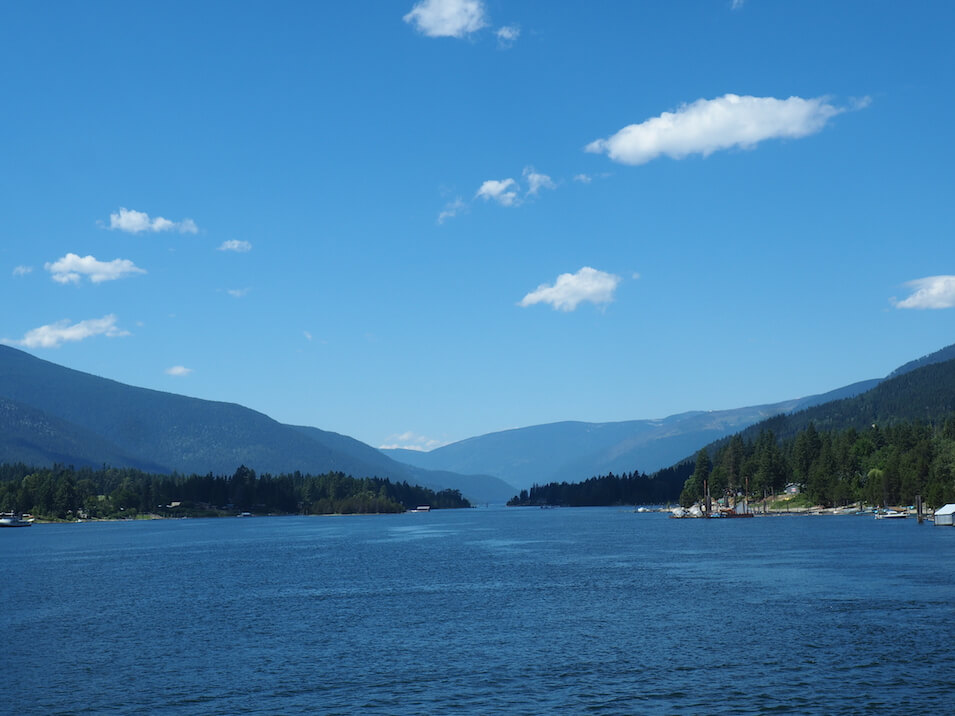
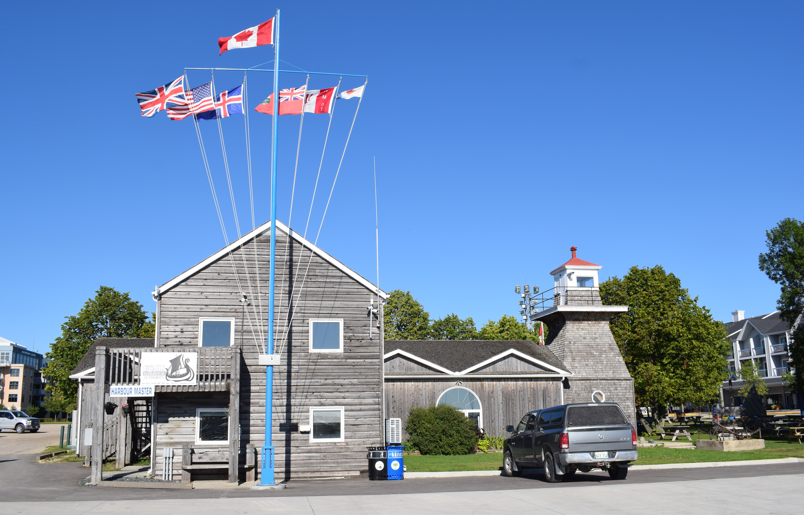
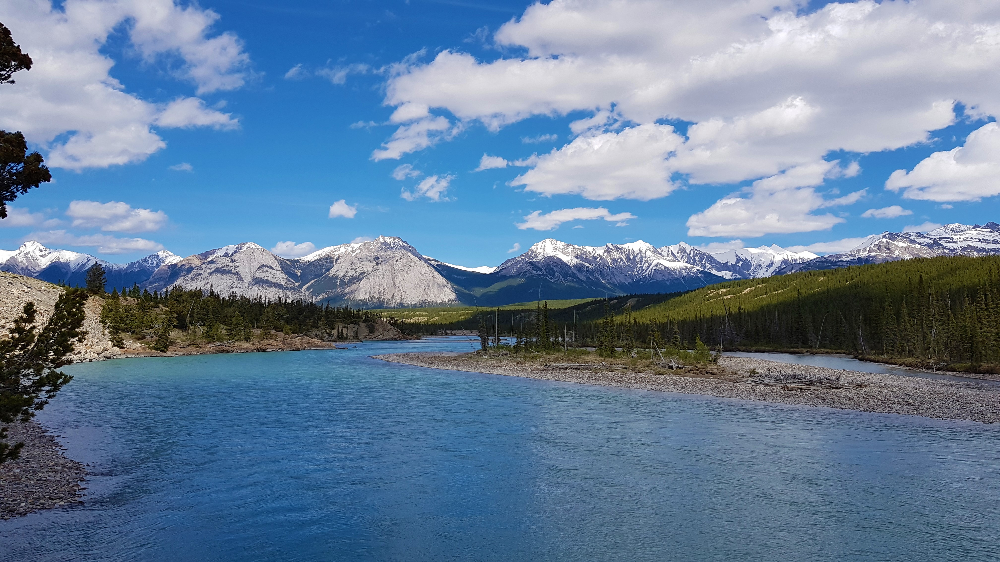
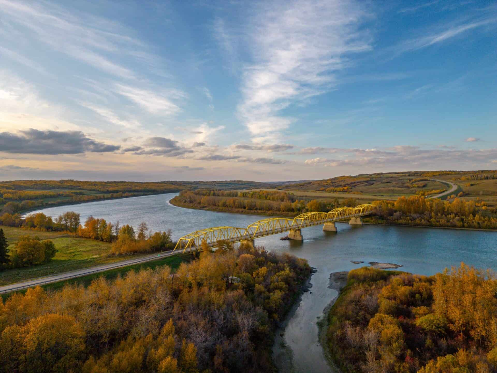
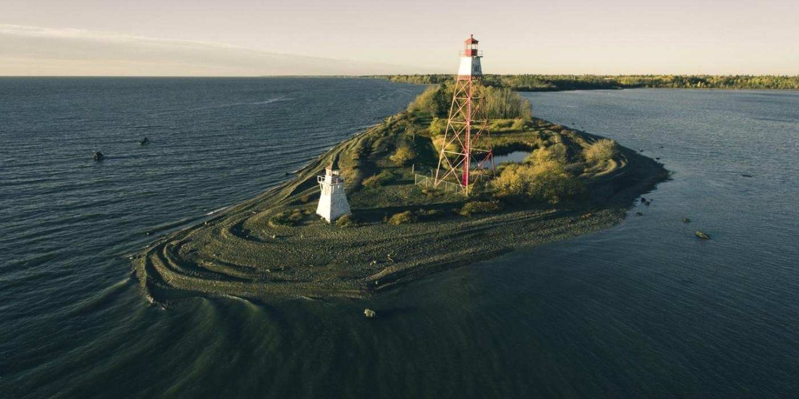
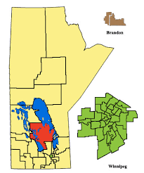

Lake Winnipeg
Lake Winnipeg is a lake just north of Winnipeg (surprisingly) that measures at about 250,000 km2 in surface area. It is typically 12 meters deep, but has reached up to 36 meters. Lake Winnipeg is the twelfth largest lake in the world, and lives near Gimli, a settlement also just north of Winnipeg.
Click here to learn more about Lake Winnipeg on Wikipedia.


Saskatchewan River
The Saskatchewan River is a river near Saskatchewan that spans 550 kilometers before emptying into Lake Winnipeg, the previously mentioned waypoint. It is typically about 3 meters deep, but has reached up to 10 meters. Despite mostly taking space in Saskatchewan, the river starts and ends in Manitoba.
Click here to learn more about the Saskatchewan River on Wikipedia.

Interlake Region
This is a region of land located within Manitoba that is between Lake Winnipeg and Lake Manitoba. It consists of a city, six towns (Gimli included), and a village. The largest population of the region resides within Selkirk, the single city found inside this region.
Click here to learn more about the Interlake Region on Wikipedia.
